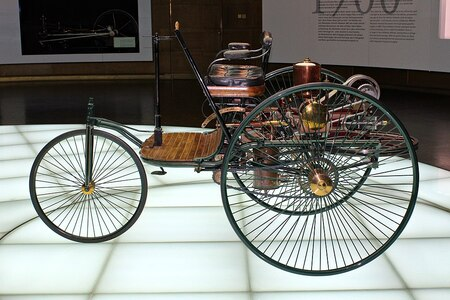
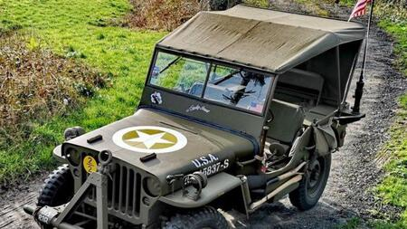
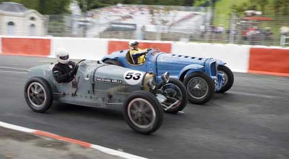

En 1873, Amédée Bollée, un français, construit et vend un véhicule à vapeur pouvant aller jusqu'à 40 km/h. Mais c'est l'invention du moteur à explosion en 1883, par Belge Étienne Lenoir, qui va révolutionner l'histoire automobile. Les automobiles se déplaceront de plus en plus vite et de plus en plus loin.Tout d'abord le premier véhicule à combustion de l'histoire Le Benz Patent-Motorwagen Nummer 1, fabriqué par Carl Benz en 1885, est considéré par certains comme la première automobile de l'histoire, en raison du moteur à explosion qui constitue son système de propulsion. Pour d’autres, c'est en 1884 que la première automobile mue par un moteur à combustion interne quatre temps à pétrole, brevetée par Édouard Delamare-Deboutteville et Léon Malandin, parcourut ses premiers kilomètres. Par ailleurs, le British Royal Automobile Club et l'Automobile Club de France s'accordent à dire qu'il s'agit du fardier de Nicolas Joseph Cugnot.Les 1ères carrosseries ressemblaient encore aux attelages tirés par des chevaux.
Les guerres vont faire évoluer les automobiles et les habitudes : 14-18 : Transport des soldats au front, transport des blessés, des vivres.... 39-45 : apparition des 1ères voitures au gaz.près la 2ème guerre mondiale, la production automobile mondiale s'envole.
L'aspect des voitures évolue et leur utilisation aussi : apparition de championnat mondial de voitures.
En 1900, les Etats-Unis, la France et l'Allemagne produisent déjà 9504 voitures. Huit ans après, Henry Ford invente son modèle T, qu'il fera construire à des millions d'exemplaires sur ses chaînes d'assemblage. Grâce à lui, le transport rapide individuel pour tous voit le jour. Ford va imposer ses standards de production à l'ensemble du secteur automobile et plus largement à toute l'industrie dès le début du XXe siècle Auchan En Europe, il faut attendre la reprise économique de l'après-guerre pour que l'automobile se démocratise : la « Coccinelle » de Volkswagen, la 4CV de Renault et la 2CV de Citroën remportent un succès populaire considérable, et sont vendues à plusieurs millions d'exemplaires. L'augmentation exponentielle du nombre de véhicules à roues et de leur vitesse a engendré la mise en place du code la route et du permis de conduire. L'automobile a révolutionné le transport et a entrainé de profonds changements Jen profiti sociaux, en particulier dans le rapport des individus à l'espace. Elle a favorisé le développement des échanges économiques et culturels et conduit au développement massif de nouvelles infrastructures (routes et autoroutes, parkings). De Ferdinand Porsche à André Citroën en passant par Louis Renault, les noms des grands capitaines de l'industrie automobile résonnent encore dans notre quotidien. Les enjeux contemporains de la voiture Dans les années 1970, l'automobile doit s'adapter à de nouveaux défis. Les chocs pétroliers (1973 et 1979) provoquent la hausse du prix de l'essence et la crainte d'une pénurie d'aller plus loin avec la même quantité d'essence. Ils améliorent la forme des carrosseries, les rendant plus aérodynamiques. Parallèlement, on commence à prendre conscience des dangers de la route : les automobilistes sont de plus en plus nombreux, et les voitures, plus performantes, leur permettent de rouler plus vite. Le nombre d'accidents, ainsi que leur gravité, augmentent de manière dramatique. Tandis que les constructeurs automobiles renforcent les équipements de sécurité des véhicules, les pouvoirs publics prennent un certain nombre de mesures (amélioration du réseau routier, construction d'autoroutes, prévention routière, limitation de vitesse, port de la ceinture de sécurité, contrôle technique pour les voitures d'occasion etc.). Enfin, le nombre croissant d'automobiles sur les routes entraîne un autre problème crucial : la pollution automobile. Les pots catalytiques permettent bien d'éliminer certains polluants, mais pas le dioxyde de carbone (ou gaz carbonique, CO2) qui contribue à augmenter l'effet de serre, donc à réchauffer la planète. C'est désormais vers le développement de la voiture électrique que les constructeurs automobiles, tels l'américain Tesla, portent l'essentiel de leurs investissements pour répondre à cet enjeu environnemental.